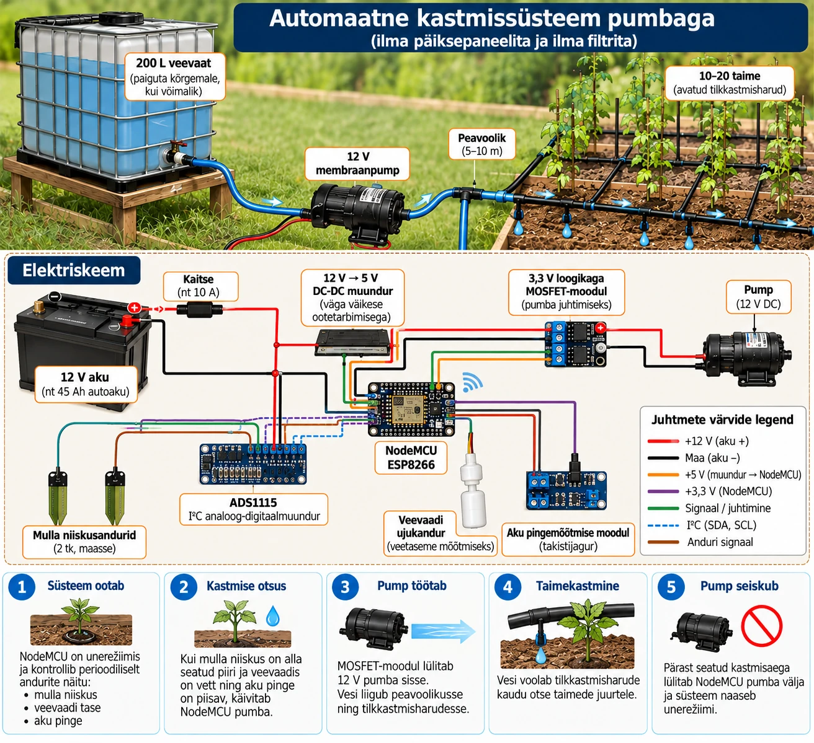
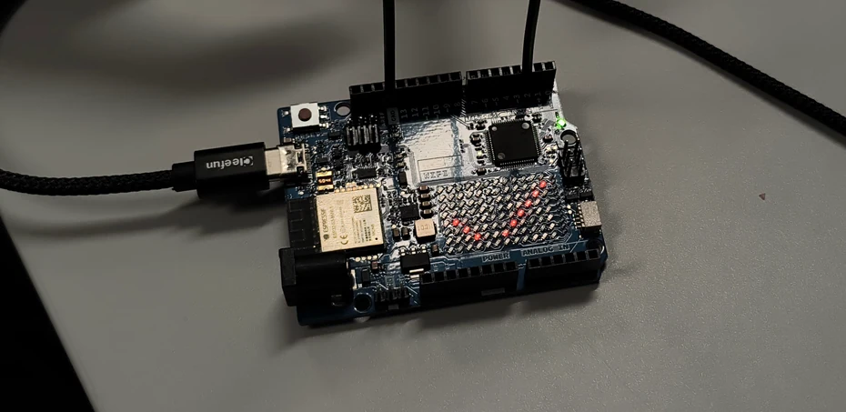

Rühm 4 · Andurid ja automaatika
Siseaia automaatkastmine
Tallinna Ülikooli siseaia kastmissüsteemi kavand ja elektroonikakatsed, mille eesmärk oli hoida taimi kastetuna ka suvepuhkuste ajal.


Probleem ja eesmärk
Ülikooli siseaia taimed vajavad vett ka juulis ja augustis, kui igapäevast käsitsi kastmist on raske korraldada. Rühm vaatas üle varasemad süsteemid ja küsitles aia vajadustega kursis olnud juhendajat.
Varasemas raskusjõul töötanud lahenduses ei pidanud veemahuti alusraam vastu ning akupanga tööaeg jäi lühikeseks. Projekteerimise lähtepunktiks võeti olemasolev 200-liitrine mahuti ja voolikud. Lahendus pidi olema hõlpsasti hooldatav ja arvestama välitingimustega.
Lahendus
Rühm võrdles kaht varianti: raskusjõul töötavat elektrilise kraaniga süsteemi ja veepumbaga lahendust. Prototüübi jaoks valiti pump, mis viib vee mahutist voolikute kaudu taimedeni.
Kavandis mõõdab mullaniiskuse andur, millal kastmist alustada, ning veetaseme andur aitab jälgida veevaru. Rühm kavandas pumba juhtimise kontrolleriga ja arvestas sellega, et toide peab püsima töökorras ka siis, kui aias kedagi pole.
Arendusprotsess
-
10.–24. september
Aia vaatlus ja tellija intervjuu
10. septembril tutvus rühm siseaia ja varasemate katsetega. 17. septembri intervjuus täpsustati olemasolevaid vahendeid ja varasemate lahenduste kitsaskohti. Kuu lõpus koondati sisend kasutajauuringusse ja nõuetesse.
-
1.–23. oktoober
Tehniline kirjeldus ja pumbaga lahenduse valik
Oktoobri alguses tutvuti Arduino keskkonnas juhtplaadi programmeerimisega. Rühm võrdles elektrilist kraani ja pumpa, valis pumbaga suuna ning koostas andurite, juhtplaadi, toite ja ühenduste loendi. Lahenduse kavandit tutvustati vahenädalal.
-
5. november
Juhtplaadi ja veetaseme anduri katse
Rühm proovis Arduino juhtplaati ning kontrollis kuivas katses veetaseme anduri kontakti tööd. 5. novembri katsesalvestis näitab juhtplaadi ja anduri ühendust töölaual.
-
Novembri prototüübikatsed
Andurinäidud ja kastmisloogika
Päevikus on kirjas mullaniiskuse anduri võrdluskatsed vees, kuivas mullas ja veidi niiskes mullas. Rühm kasutas mõõtmisi läviväärtuste arutamiseks ning proovis programmis ajastatud väljundit ja niiskuse põhjal pumba juhtimist.
Pildid ja joonised


Tulemus
Valmis kastmissüsteemi skeem ja rühm katsetas juhtplaati ning andurite tööd. Prototüübi programm eristas kuivemat ja märjemat mulda ja sisaldas pumba juhtimise loogikat.
Siseaias kasutusele võtmiseks tuleb terviksüsteemis kontrollida vee ühtlast jaotumist, niiskuslävede sobivust ning aku ja ühenduste töökindlust. Rühma materjalid dokumenteerivad komponentide katseid ja lahenduse kavandit.
Allikad. Rühma projektipäevik, tegevuskava, vahekokkuvõte, kastmissüsteemi skeem ja 5. novembri katsesalvestis.